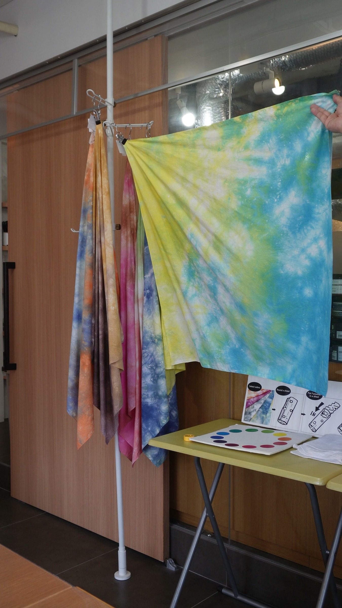
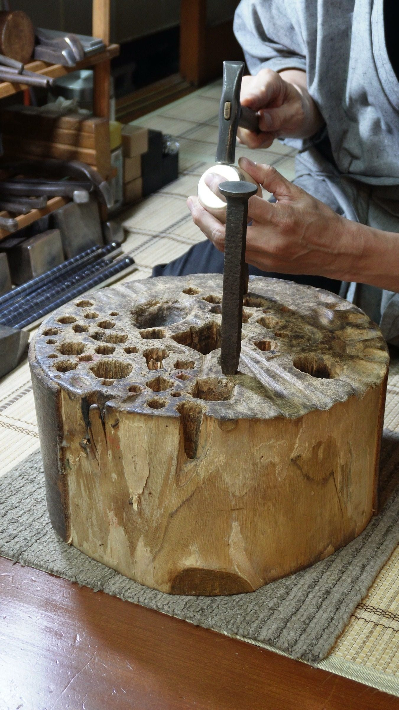
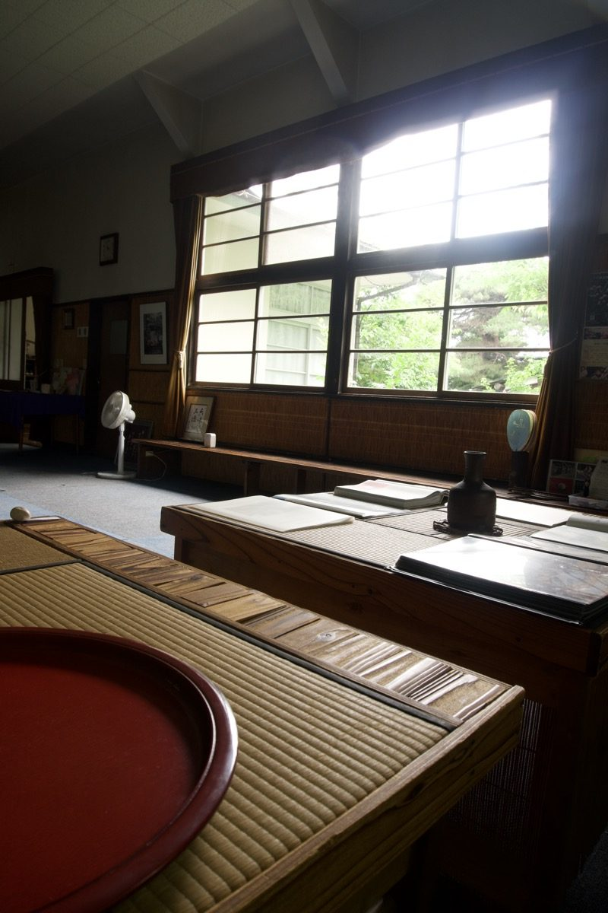

STORIES
Stories
Published stories, newest first.

NIHONBASHI, TOKYO · SINCE 1890Decided while the cloth is still whiteA hands-on dye studio in Nihonbashi, milling its own colour since 1890.
TAITO, TOKYO · EDO SILVERMade to age.Most things are best the day you buy them. This one you grow.
KOGANEI, TOKYO · OVER 660 YEARSPrincess cuisine.The princesses never cooked it.